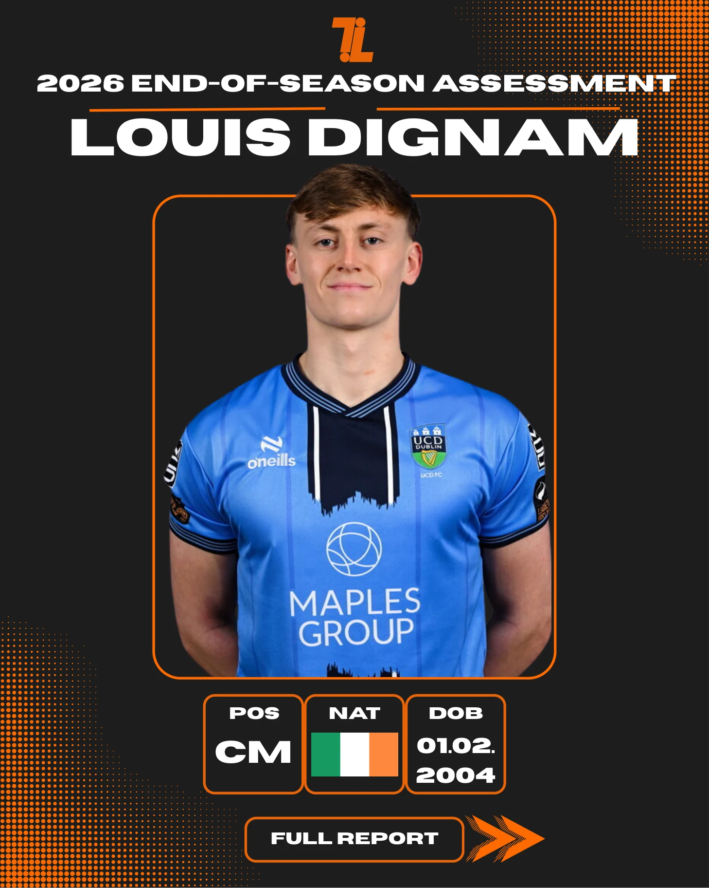

UCD · 2026 season · 5 November 2026
Midfield intelligence, and a player ready for the next level.
A full end-of-season scout report on UCD midfielder Louis Dignam, covering technical, tactical, physical and psychological attributes alongside his 2026 league numbers and comparisons with other midfielders.
The report assesses Dignam as a strong recruitment option for League of Ireland Premier Division clubs, with the potential to progress further.
View all 11 pages ↘
The complete assessment
Scout report / Louis Dignam
The full report is shown below in its original page order. Open any page to view it at full resolution.